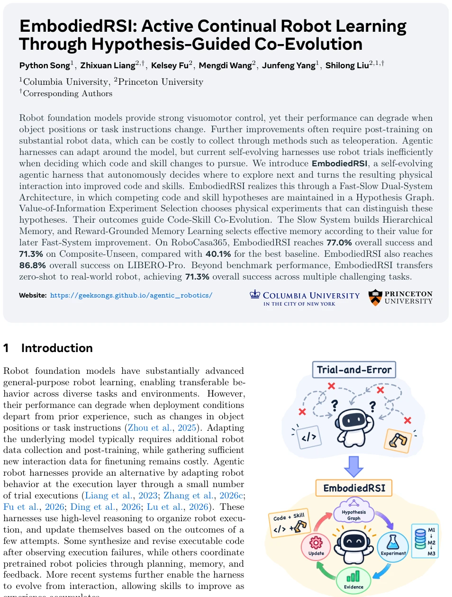
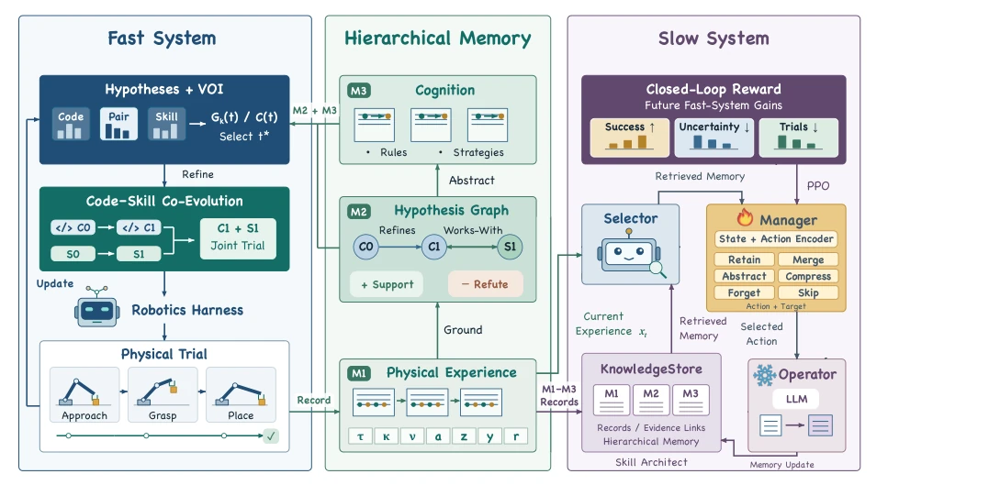
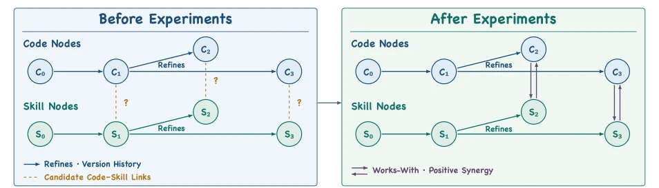
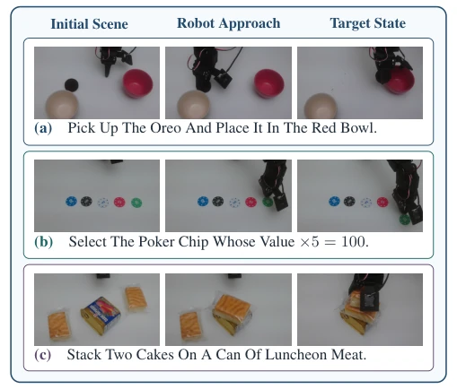
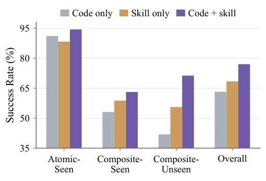
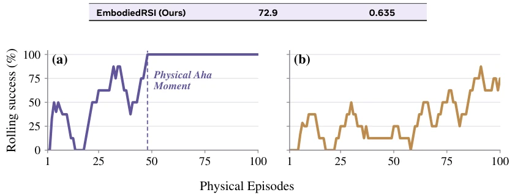

In this era, frozen models are standard, but the real skill lies in preventing agents from blind experimentation. EmbodiedRSI handles this work quite meticulously, binding code and skills together for evolution rather than evolving separately, which is quite smart. However, although this "fast-slow system" architecture is theoretically perfect, the computational overhead in practice is estimated to be significant, after all, it needs to maintain a hypothesis graph. The most outstanding feature is that it truly transferred knowledge learned in simulation to real machines, with a 71.3% real-machine success rate being quite good for complex tasks. But don't get too excited too early, this method relies on a large number of physical trials to update hypotheses; if real-machine costs are too high, this "active learning" might turn into "active burning money". Moreover, it mainly relies on simulation for evolution, with real machines just for verification; whether the distribution shift problem on real machines is thoroughly solved depends on follow-ups. In short, it is a solid engineering improvement, but still far from general intelligence, representing a typical case of "squeezing efficiency to the limit under a limited budget".
Although robot foundation models (VLA) are powerful, performance collapses once object positions or task instructions change. Fine-tuning requires large amounts of data, and teleoperation is too expensive. Existing agent harnesses (such as Harness VLA, Zetta) can adapt, but physical trial-and-error efficiency is low. They do not know which experiment to select to provide the most useful evidence, treating physical trials as consumables rather than scarce resources. Moreover, code and skills are often evolved separately, ignoring synergy in long-horizon operations. Memory accumulation is also just for retrieval, not considering the value for future evolution. This paper aims to solve how to let agents actively decide "what to test next", efficiently converting physical interaction into continuous evolution of code and skills.

Figure1 TheEmbodiedRSISelf-EvolutionLoop. Phys- ical outcomes guide code and skill updates while the robot foundation model remains frozen.
方法Method
整体架构是快慢双系统。Fast System 负责快速迭代，维护一个 Hypothesis Graph，节点是代码和技能假设，边表示进化关系。它用 Value-of-Information (VOI) 来选择下一个物理实验，目标是最大化不确定性减少量除以成本。Code-Skill Co-Evolution 会对比联合执行与单独执行的效果，确保协同增益。Slow System 负责长期记忆，分三层：M1 记录原始轨迹，M2 维护假设图，M3 蒸馏可复用认知。关键创新是 Reward-Grounded Memory Learning，用 PPO 训练记忆选择策略，奖励信号来自后续 Fast System 的任务提升、不确定性降低和实验成本节省。这样记忆不再是死数据，而是能指导未来探索的资产。此外，它通过匹配试验（matched trials）来评估假设，确保代码和技能的改进是在相同初始状态下对比的，避免了环境噪声干扰。
The overall architecture is a fast-slow dual system. The Fast System is responsible for rapid iteration, maintaining a Hypothesis Graph, where nodes are code and skill hypotheses, and edges represent evolutionary relationships. It uses Value-of-Information (VOI) to select the next physical experiment, with the goal of maximizing the reduction in uncertainty divided by cost. Code-Skill Co-Evolution compares the effects of joint execution versus separate execution to ensure synergy gains. The Slow System is responsible for long-term memory, divided into three layers: M1 records original trajectories, M2 maintains the hypothesis graph, M3 distills reusable cognition. The key innovation is Reward-Grounded Memory Learning, using PPO to train the memory selection policy, where reward signals come from subsequent Fast System task improvements, uncertainty reduction, and experiment cost savings. In this way, memory is no longer dead data, but an asset that can guide future exploration. Additionally, it evaluates hypotheses through matched trials, ensuring that improvements in code and skills are compared under the same initial state, avoiding interference from environmental noise.

Figure 2 Overview of EmbodiedRSI. The Fast System uses a Hypothesis Graph to choose each physical experiment. Each result guides a joint code-skill update. The Slow System retains memories that improve later adaptation.

Figure 3 Hypothesis Graph Updates from Physical Trials. Before Experiments (left). Directed refines edges show how code and skill hypotheses have evolved, while dashed links mark code-skill relations awaiting evidence. After Experiments (right). Solid bidirectional works-with edges identify relations supported by measured positive joint gain.
Tested on RoboCasa365 and LIBERO-Pro. Baselines include OpenVLA, π0, Harness VLA, Zetta, etc. EmbodiedRSI reached 71.3% on RoboCasa365 Composite-Unseen, far exceeding Harness VLA's 40.1%. Overall 86.8% on LIBERO-Pro. Real-machine transfer used SmolVLA, overall success rate 71.3%, 25 percentage points higher than standalone SmolVLA. Especially in the card selection task, improved from 10% to 90%. Ablation studies show that Code-Skill Co-Evolution is better than separate evolution, VOI selection is much more efficient than random exploration (AUC 0.635 vs 0.309), and Reward-Grounded Memory also significantly improved long-term learning capability.

Figure 5 Representative Real-World Evaluation Tasks. Initial and target states.

Figure6 Code-SkillCo-EvolutionAblation. Bars show RoboCasa365 success rates.

Figure 7 Representative LIBERO-Pro Learning Curves. Eight-episode rolling success on SPAT-T over 100 physical episodes. (a) Value-of-Information Experiment Selection reaches sustained 100% at episode 48 (dashed line). (b) Random Selection continues to fluctuate.